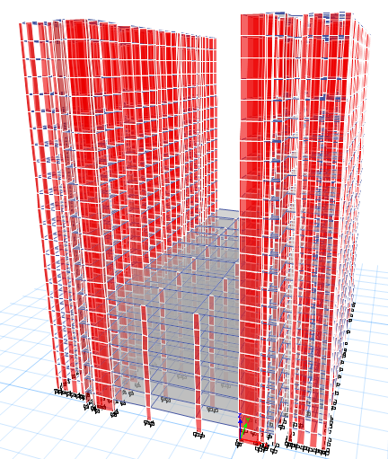
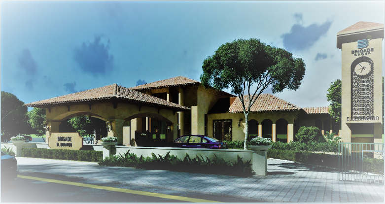
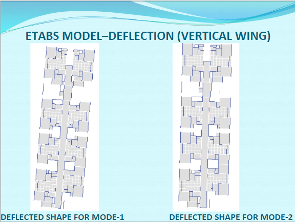
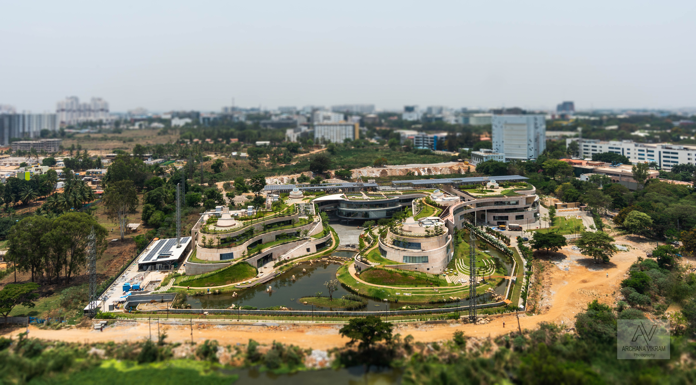
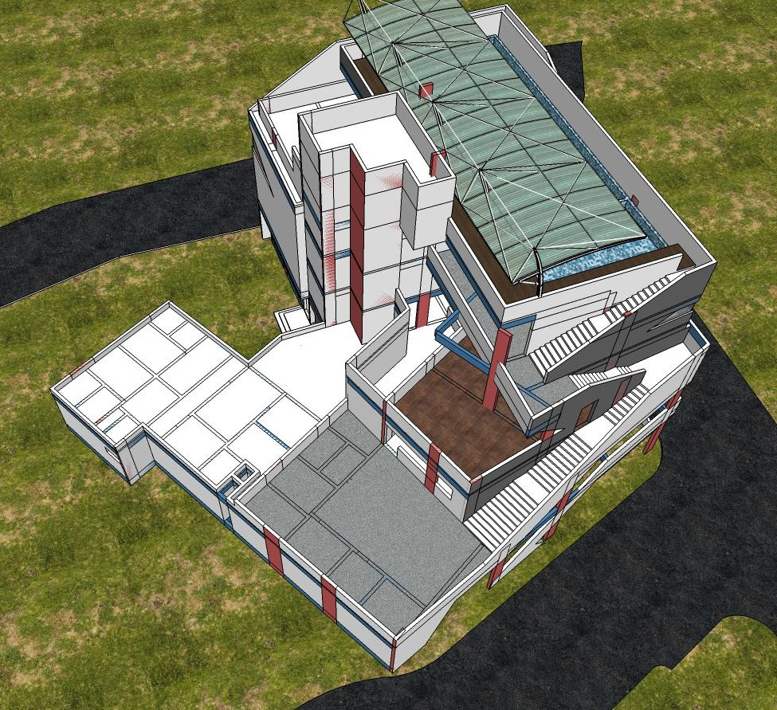
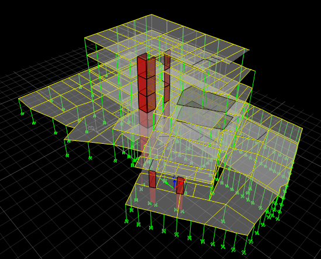
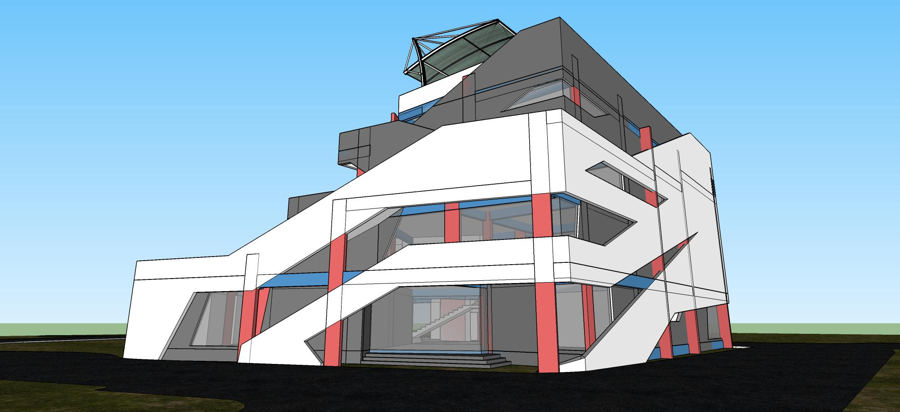

Harsha Bharadwaj
My knowledge, experience, and skills lie in the field of civil/structural engineering and material science.
After completing my master's degree in structural engineering from Michigan State University in 2015, I continued research work under Prof. Parviz Soroushian for an additional year. This was a continuation of my thesis work with him, and during this period I published three papers in 'Construction and Building Materials', 'Civil Engineering Journal' and 'European Journal of Advances in Engineering and Technology' journals.
Since then, I have worked in civil/structural engineering consultancies to gain industrial knowledge and better understand the practical side of construction while honing my capabilities in structural analysis, steel and reinforced cement concrete design. While I have gained reasonable experience in construction physics, I am confident in my ability to analysize problems in the fields of civil engineering and material science.
Education
Michigan State University
GPA: 3.1
National Institute of Technology, India
GPA: 3.1
Experience
Sterling Consultants stands amongs the oldest and the most successful structural consulting firm in Bangalore. For over 25 years, we have led the construction industry in high rise buildings and structures with considerably intricate analysis and deisgn. I have engineered a variety of super structures ranging from high rise buildings to large span steel structures; and foundations involving complex retaining systems, pile foundations at weak soild conditions, and raft foundations with high water levels. Following are a few examples of the projects I have engineered,
Associate Structural Engineer
* El-Dorado is an RCC residential complex consisting of 10 housing blocks, two community halls and two club houses, located in Bangalore, India; and my most recent ongoing project.
* It consists of a 7 storied multi-level car parking structure in-between the housing blocks. Each housing block is 23 storied, 165 feet tall RCC building that did not pass the requirements for 3-D lateral analysis due to its high aspect ratio in plan.
* To solve this problem, I included expansion joints at certain locations to break up the building into smaller structures with significantly smaller aspect ratio.
* Static and dynamic analysis for earthquake and wind were carried out consequenly to arrive at the most stable and economic structure. Furthermore, analytical and design modifications were carried out to incorporate the codal requirements for tall strucutres.
* A venerable Italian architectured, single storied structural steel building was constructured upfront to incorporate the marketing office and mock-up display apartment stypes.
* Titan Integrity is the corporate office headquarters for Titan group at Bangalore, India. The building is a great example for large span steel structure with an arbitraty shape(somewhat resembling an amoeba).
* Most of the columns are composites of structural steel embedded in concrete to achieve the necessary load flow and design strength, since they are shaped arbitrarily to satisfy architectural intent.
* There is a considerable level difference across the construction site and this has been excellently utilized in the landscaping and forming various mezannine levels.
* Part of the property had been encroached by the neighboring Veerasandra lake, causing complications with the construction procedue and foundation systems.
* This lake is used as a landscaping feature by directing it into the property only by a small underground stream, while dewatering the remaining lake in the property by providing adequate retaining structures.
* Seven Gardens is an RCC residential complex with seven housing blocks and one club house. While the housing blocks were somewhat simple, the club house was an considerably intricate structure.
* It consists of only 5 floors with the terracle level suporting a swimming pool. What makes the building complicated with respect to structural analysis and design is the overwhelming amount of suspended and floating columns being picked at various levels.
* Several transfer girders had to be designed and the construction sequence proved to be most crucial. Application and removal of formwork has to be very carefuly managed.
* Although the building is only 45 feet tall, dynamic analysis for earthquake and wind had to be carried out since this is an irregular structure(presence of floating and suspended columns).
- 
- 
- 
-

- 
-

-

- 
- 
- 
Associate Structural Engineer
⦁ Analyzed and designed several steel frame structures on STAAD Pro and gained significant proficiency in using STAAD Pro.
⦁ Made site visits to check the integrity of an existing hospital in Greater Detroit region. Following that, analysed and designed a retrofitting system in order to construct an addition floor for occupancy.
⦁ Analyzed and designed a 14 storied RCC Hostel building for Oakland University, Michigan. RAM Modeller was used to create a comprehensive 3-D model, which was then exported onto the different RAM Modules of RAM Concrete and RAM Foundation to design reinforced concrete beams, columns, walls and foundations respectively.
⦁ Worked on wind analysis of curtain walls in tall buildings, and design suitable connection details for the same.
Associate Civil Engineer
⦁ Represented Somat Engineering as the field engineer during the pile foundation of the Combined Sewer operation for the city of Dearborn, Michigan.
⦁ Conducted several soil boring and rock coring operations, documented the logs and prepared soil reports in lieu of of cliets requirements.
⦁ Conducted topographical and boundary survey work on five public parks in the Detroit Metro region in order to facilitate the construction of new pipelines across the city. Worked in Civil 3D to model, develop and present the profile of the proposed pipeline from the collected survey data. The job was in efforts to solve the issue of leakage of lead into the water pipes.
Research Assistant Intern
⦁ Worked on eco-friendly, reliable, and quick construction systems using natural materials available only in a few targeted remote regions of the world.
⦁ Examining and evaluating the ability of many naturally available fabrics to work as a replacement for steel reinforcements
⦁ Formulated the theoretical framework for the construction system, while conducting experimental tests on its sub-systems.
⦁ I Published 3 papers in “Civil Engineering Journal”, “European Journal of Advances in Engineering and Technology”, and the prestigious “Construction and Building Materials” journals based off of this research work.
Skills


- CSI: ETABS Modelling & Analysis -- SAFE Slab & Foundation Analysis -- RCDC Foundation Analysis
- BENTLEY: STAAD Modelling & Analysis -- RAM Modelling, Analysis & Design & Debugging
- MATLAB: Analysis Coding Language
- MS ACCESS: Analysis Database Files
- MS EXCEL: Spread Calculations
Publications
-
WorkflowHarsha Bharadwaj, Faris Matalkah, Parviz Souroushian. “Development of sandwich composites for building construction with locally available materials”:Construction and Building Materials Journal, 147, pp.380-387, 2017
- Faris Matalkah, Harsha Bharadwaj, Parviz Souroushian. “Development and Characterization of Gypsum-Based Binder”:European Journal of Advances in Engineering and Technology, 4(3), pp.153-157, 2017
-
- Faris Matalkah, Harsha Bharadwaj, Parviz Souroushian. “Aerated Concrete Produced Using Locally Available Raw Materials”:Civil Engineering Journal, 3(4), pp.214-220, 2017
Interests
Apart from being a structural engineer, I enjoy spending time in nature and playing chess. I regularly practice football in efforts of staying fit. I involve myself in cultural activities and take interest in learning different approaches of living.
I strongly believe in cultivating a happy and healthy relationship with co-workers. This is the best way to bring out the best in us. I would like to end on that note, sincerely looking forward to working with you.